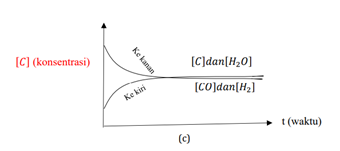

e Modul Kesetimbangan Kimia Kelas XI
Kata Pengantar
E-modul kesetimbangan kimia ini merupakan suplemen bagi peserta didik dalam mempelajari materi kesetimbangan kimia. Melalui e-modul ini diharapkan peserta didik dapat mempelajari materi kesetimbangan kimia secara mandiri. E-modul ini dilengkapi dengan teks, gambar, video pembelajaran, LKPD, dan evaluasi yang terintegrasi secara keseluruhan dalam e-modul ini.
Modul ini disusun dengan harapan mampu mendorong aktivitas dan kreativitas peserta didik dalam proses pembelajaran secara luring maupun daring. E-modul ini telah dilengkapi dengan petunjuk penggunaan sehingga memudahkan dalam proses penggunaannya. Demikian semoga dengan tersusunnya e-modul ini dapat memberi manfaat bagi peserta didik secara pribadi dan mendukung kelancaran proses pembelajaran, dan lebih luas lagi mampu meningkatkan mutu pendidikan.
Medan, 23 Juni 2023
Penulis
Daftar Isi
Kata Pengantar
Daftar Isi
Glosarium
Peta Konsep
Pendahuluan
- Identitas Modul
- Kompetensi Dasar
- Deskripsi Singkat Materi
- Petunjuk Penggunaan Modul
- Materi Pembelajaran
Kegiatan Pembelajaran I
Kesetimbangan Kimia
- Tujuan Pembelajaran
- Uraian Materi
- Rangkuman
- PenugasanÂ
- Latihan Soal
Kegiatan Pembelajaran II
Tetapan Kesetimbangan
- Tujuan Pembelajaran
- Uraian Materi
- Rangkuman
- PenugasanÂ
- Latihan Soal
Kegiatan Pembelajaran III
Pergeseran Kesetimbangan
- Tujuan Pembelajaran
- Uraian Materi
- Rangkuman
- PenugasanÂ
- Latihan Soal
Rangkuman
Uji Kompetensi
Daftar Pustaka
Glosarium
- Hukum KesetimbanganÂ
-
Hukum aksi massa yang menyatakan bahwa nisbah hasil kali konsentrasi produk terhadap hasil kali konsentrasi pereaksi, dipangkatkan dengan koefisien reaksinya, mempunyai nilai tertentu pada suhu tertentu
- Keadaan Setimbang
-
Keadaan saat dua proses yang berlawanan arah berlangsung secara bersamaan dengan kelajuan yang sama sehingga tidak menghasilkan perubahan makroskopis
- Reaksi Kesetimbangan
-
Reaksi bolak balik di mana laju reaksi ke kanan sama dengan laju reaksi ke kiri
- Tetapan Laju
-
Suatu bilangan tetap yang merupakan angka faktor perkalian terhadap konsentrasi dalam rumusan laju reaksi
- Kesetimbangan Dinamis
-
Suatu keadaan dari sistem kesetimbangan yang menyatakan reaksi terus berlangsung ke dua arah yang berlawanan secara mikroskopis
- Azas Le Chatelier
-
Prinsip yang menyatakan bahwa jika dalam suatu sistem kesetimbangan mengalami perubahan konsentrasi, suhu, volume, atau tekanan maka sistem akan menyesuaikan dirinya untuk meniadakan pengaruh perubahan yang diterapkan hingga kesetimbangan baru tercapai
- Konsentrasi Reaksi
-
Besaran yang menunjukkan kepekatan suatu larutan melalui perbandingan antara zat terlarut dan pelarut
- Koefisien reaksi
-
Angka yang ditulis mendahului rumus kimia zat, yang menyatakan perbandingan mol zat yang terlibat dalam reaksi
- Reaksi Eksoterm
-
Reaksi yang melepaskan kalor dari sistem ke lingkungan sehingga entalpi hasil reaksi menjadi berkurang
- Reaksi Endoterm
-
Reaksi yang menyerap kalor dari lingkungan ke sistem sehingga entalpi hasil reaksi bertambah
- Kalor
-
Energi yang berpindah akibat adanya perbedaan suhu
- Entalpi
-
Jumlah energi yang terkandung dalam suatu materi
- Proses Haber BoshÂ
-
Proses pembuatan gas amonia di industri yang menggunakan bahan baku gas nitrogen dan gas oksigen dengan katalis besi (Fe)
- Proses Kontak
-
Proses pembuatan asam sulfat di industri dengan menggunakan katalis vanadium pentaoksida (V2O5)
- Katalis
-
Zat yang dapat mempercepat terjadinya reaksi tetapi tidak ikut bereaksi
- Optimal
-
Suatu kondisi tertinggi dari suatu proses
Peta Konsep
{kind=link}
{"id":"db04ec87-8dd5-4001-a6f5-c288b0423198","title":"KESETIMBANGAN KIMIA","mindmap":{"root":{"id":"f20aa6ee-aa23-4fb1-9c68-1169e4fcabef","parentId":null,"text":{"caption":"KESETIMBANGAN KIMIA","font":{"style":"normal","weight":"bold","decoration":"none","size":16,"color":"#000000"}},"offset":{"x":0,"y":0},"foldChildren":false,"branchColor":"#000000","children":[{"id":"1e9d1c47-aeef-46c0-983a-f1800d904b1d","parentId":"f20aa6ee-aa23-4fb1-9c68-1169e4fcabef","text":{"caption":".","font":{"style":"normal","weight":"normal","decoration":"none","size":3,"color":"#000000"}},"offset":{"x":63,"y":-154},"foldChildren":false,"branchColor":"#fcd561","children":[{"id":"8f9073d3-916e-4459-96a1-34f1a21affc3","parentId":"1e9d1c47-aeef-46c0-983a-f1800d904b1d","text":{"caption":"dapat berupa","font":{"style":"normal","weight":"normal","decoration":"none","size":23,"color":"#000000"}},"offset":{"x":180,"y":-151},"foldChildren":false,"branchColor":"#fcd561","children":[{"id":"26d4bc77-423b-41e0-8aa8-b390e52ec375","parentId":"8f9073d3-916e-4459-96a1-34f1a21affc3","text":{"caption":"Kesetimbangan homogen","font":{"style":"normal","weight":"bold","decoration":"none","size":19,"color":"#000000"}},"offset":{"x":219.00006103515625,"y":-65},"foldChildren":false,"branchColor":"#fcd561","children":[]},{"id":"8d7e121c-a4a3-4e07-91fd-f4ab84beb50c","parentId":"8f9073d3-916e-4459-96a1-34f1a21affc3","text":{"caption":"Kesetimbangan heterogen","font":{"style":"normal","weight":"bold","decoration":"none","size":19,"color":"#000000"}},"offset":{"x":291.00006103515625,"y":41},"foldChildren":false,"branchColor":"#fcd561","children":[]}]},{"id":"9025af51-0805-4c0f-b998-087dcd9cf329","parentId":"1e9d1c47-aeef-46c0-983a-f1800d904b1d","text":{"caption":"diterapkan dalam","font":{"style":"normal","weight":"normal","decoration":"none","size":23,"color":"#000000"}},"offset":{"x":215,"y":182},"foldChildren":false,"branchColor":"#fcd561","children":[{"id":"4a019df9-d081-41a7-b451-e2bd68ca5c27","parentId":"9025af51-0805-4c0f-b998-087dcd9cf329","text":{"caption":"kesetimbangan industri","font":{"style":"normal","weight":"bold","decoration":"none","size":19,"color":"#000000"}},"offset":{"x":260.00006103515625,"y":78},"foldChildren":false,"branchColor":"#fcd561","children":[{"id":"49026f18-f223-40aa-aaf4-3488f1738e4d","parentId":"4a019df9-d081-41a7-b451-e2bd68ca5c27","text":{"caption":"Proses Haber Bosch","font":{"style":"normal","weight":"bold","decoration":"none","size":23,"color":"#000000"}},"offset":{"x":202,"y":-97},"foldChildren":false,"branchColor":"#fcd561","children":[]},{"id":"ee920b3e-58a3-476e-9289-19f26d6920c0","parentId":"4a019df9-d081-41a7-b451-e2bd68ca5c27","text":{"caption":"Proses Kontak","font":{"style":"normal","weight":"bold","decoration":"none","size":23,"color":"#000000"}},"offset":{"x":221,"y":76},"foldChildren":false,"branchColor":"#fcd561","children":[]}]}]},{"id":"434ca712-4d95-412b-a08f-8a7f4e5a1e3d","parentId":"1e9d1c47-aeef-46c0-983a-f1800d904b1d","text":{"caption":"mempunyai","font":{"style":"normal","weight":"normal","decoration":"none","size":23,"color":"#000000"}},"offset":{"x":257.00006103515625,"y":48},"foldChildren":false,"branchColor":"#fcd561","children":[{"id":"f817026f-c22e-4929-99f0-e880e7bd3d84","parentId":"434ca712-4d95-412b-a08f-8a7f4e5a1e3d","text":{"caption":"tetapan kesetimbangan","font":{"style":"normal","weight":"bold","decoration":"none","size":19,"color":"#000000"}},"offset":{"x":190,"y":-68},"foldChildren":false,"branchColor":"#fcd561","children":[{"id":"55708242-c7a3-4fde-8d10-8a5d62ab703e","parentId":"f817026f-c22e-4929-99f0-e880e7bd3d84","text":{"caption":"mempunyai","font":{"style":"normal","weight":"normal","decoration":"none","size":23,"color":"#000000"}},"offset":{"x":196,"y":-24},"foldChildren":false,"branchColor":"#fcd561","children":[{"id":"f1cc4e22-4580-4c3c-b98f-6576c931d58b","parentId":"55708242-c7a3-4fde-8d10-8a5d62ab703e","text":{"caption":"Kc","font":{"style":"normal","weight":"bold","decoration":"none","size":23,"color":"#000000"}},"offset":{"x":177,"y":-38},"foldChildren":false,"branchColor":"#fcd561","children":[]},{"id":"5b92550c-4515-4e69-915b-59c620e8f1a7","parentId":"55708242-c7a3-4fde-8d10-8a5d62ab703e","text":{"caption":"Kp","font":{"style":"normal","weight":"bold","decoration":"none","size":23,"color":"#000000"}},"offset":{"x":220,"y":26},"foldChildren":false,"branchColor":"#fcd561","children":[]}]},{"id":"abefab32-30f4-4df8-99a1-c64384f3c4ad","parentId":"f817026f-c22e-4929-99f0-e880e7bd3d84","text":{"caption":"dipengaruhi","font":{"style":"normal","weight":"normal","decoration":"none","size":23,"color":"#000000"}},"offset":{"x":195,"y":79},"foldChildren":false,"branchColor":"#fcd561","children":[{"id":"0babf3ad-d8af-4a1d-a679-38ac4b0f2e87","parentId":"abefab32-30f4-4df8-99a1-c64384f3c4ad","text":{"caption":"Suhu","font":{"style":"normal","weight":"bold","decoration":"none","size":23,"color":"#000000"}},"offset":{"x":210,"y":46},"foldChildren":false,"branchColor":"#fcd561","children":[]}]}]}]}]},{"id":"7047b008-64b1-42eb-8ef2-6ad5daab8b86","parentId":"f20aa6ee-aa23-4fb1-9c68-1169e4fcabef","text":{"caption":"bersifat","font":{"style":"normal","weight":"normal","decoration":"none","size":27,"color":"#000000"}},"offset":{"x":-190.00006103515625,"y":-235},"foldChildren":false,"branchColor":"#ef1376","children":[{"id":"1574f537-b685-42ac-9f2c-7c8d508f5176","parentId":"7047b008-64b1-42eb-8ef2-6ad5daab8b86","text":{"caption":"Dinamis","font":{"style":"normal","weight":"bold","decoration":"none","size":23,"color":"#000000"}},"offset":{"x":-172,"y":-74},"foldChildren":false,"branchColor":"#ef1376","children":[]}]},{"id":"4621dcf4-d5ef-4878-8862-0890cb5cf15b","parentId":"f20aa6ee-aa23-4fb1-9c68-1169e4fcabef","text":{"caption":"berlangsung dalam","font":{"style":"normal","weight":"normal","decoration":"none","size":23,"color":"#000000"}},"offset":{"x":101,"y":167},"foldChildren":false,"branchColor":"#a0f04e","children":[{"id":"9a8945ee-1eb0-4328-affc-f705ec89fab9","parentId":"4621dcf4-d5ef-4878-8862-0890cb5cf15b","text":{"caption":"Ruang tertutup","font":{"style":"normal","weight":"bold","decoration":"none","size":23,"color":"#000000"}},"offset":{"x":234,"y":86},"foldChildren":false,"branchColor":"#a0f04e","children":[]}]},{"id":"05a5256d-432c-4835-89c5-2fcda054a341","parentId":"f20aa6ee-aa23-4fb1-9c68-1169e4fcabef","text":{"caption":"mengalami","font":{"style":"normal","weight":"normal","decoration":"none","size":23,"color":"#000000"}},"offset":{"x":-190.00006103515625,"y":160},"foldChildren":false,"branchColor":"#1e16e1","children":[{"id":"1268cdd7-c04c-4dd7-95ce-b1bd78dba6c8","parentId":"05a5256d-432c-4835-89c5-2fcda054a341","text":{"caption":"Pergeseran","font":{"style":"normal","weight":"bold","decoration":"none","size":23,"color":"#000000"}},"offset":{"x":-185,"y":-106},"foldChildren":false,"branchColor":"#1e16e1","children":[{"id":"2d83e9b3-c852-4577-98fd-0a5eb97d96ed","parentId":"1268cdd7-c04c-4dd7-95ce-b1bd78dba6c8","text":{"caption":"yang dipengaruhi oleh perubahan","font":{"style":"normal","weight":"normal","decoration":"none","size":23,"color":"#000000"}},"offset":{"x":-202,"y":-164},"foldChildren":false,"branchColor":"#1e16e1","children":[{"id":"a278fa5c-84b6-4b74-88d8-506d599b1056","parentId":"2d83e9b3-c852-4577-98fd-0a5eb97d96ed","text":{"caption":"Konsentrasi","font":{"style":"normal","weight":"bold","decoration":"none","size":23,"color":"#000000"}},"offset":{"x":-179.00001525878906,"y":-41},"foldChildren":false,"branchColor":"#1e16e1","children":[]},{"id":"4840d08b-5ef6-4edd-8580-67b578ccee64","parentId":"2d83e9b3-c852-4577-98fd-0a5eb97d96ed","text":{"caption":"Suhu","font":{"style":"normal","weight":"bold","decoration":"none","size":23,"color":"#000000"}},"offset":{"x":-155,"y":13},"foldChildren":false,"branchColor":"#1e16e1","children":[]},{"id":"cbdabcfc-65bc-422c-b1a6-0750ea0f730c","parentId":"2d83e9b3-c852-4577-98fd-0a5eb97d96ed","text":{"caption":"Volume","font":{"style":"normal","weight":"bold","decoration":"none","size":23,"color":"#000000"}},"offset":{"x":-146,"y":131},"foldChildren":false,"branchColor":"#1e16e1","children":[]},{"id":"a04676fe-164b-4bb0-a4c6-9eb6bd4b049a","parentId":"2d83e9b3-c852-4577-98fd-0a5eb97d96ed","text":{"caption":"Tekanan","font":{"style":"normal","weight":"bold","decoration":"none","size":23,"color":"#000000"}},"offset":{"x":-171,"y":193},"foldChildren":false,"branchColor":"#1e16e1","children":[]}]}]}]}]}},"dates":{"created":1693930675536,"modified":1693932882084},"dimensions":{"x":4000,"y":2000},"autosave":false}
Pendahuluan
A. Identitas Modul
Mata Pelajaran : Kimia
Kelas         : XI
Alokasi Waktu  : 8 x 40 Menit
Judul Modul    : Kesetimbangan Kimia
B. Kompetensi Dasar
3.8 Menentukan hubungan antara pereaksi dengan hasil reaksi dari suatu reaksi kesetimbangan dan melakukan          perhitungan berdasarkan hubungan tersebut
3.9 Merancang dan melakukan serta menyajikan hasil percobaan faktor faktor yang mempengaruhi arah kesetimbangan
4.8 Menentukan nilai tetapan kesetimbangan suatu reaksi dan komposisi zat saat setimbang
4.9 Menganalisis faktor-faktor yang mempengaruhi pergeseran arah kesetimbangan dan penerapannya dalam industri
C. Deskripsi Singkat Materi
Modul ini berisikan materi pokok kesetimbangan kimia, adapun kegiatan pembelajaran terbagi atas 4 yaitu:
- Kesetimbangan Kimia
- Tetapan Kesetimbangan
- Pergeseran Kesetimbangan Kimia
- Kesetimbangan Kimia dalam bidang industri
D. Petunjuk Penggunaan Modul
Agar modul dapat digunakan secara maksimal maka kalian diharapkan melakukan langkah- langkah sebagai berikut :
- Prasyarat pada materi ini adalah pemahaman mengenai hukum dasar reaksi kimia
- Bacalah modul ini secara berurutan dan berusahalah untuk memahami isinya karena materi ini akan menjadi prasyarat pada materi selanjutnya.
- Pahami tujuan yang tercantum dalam setiap kegiatan pembelajaran.
- Pelajari uraian materi secara sistematis dan mendalam dalam setiap kegiatan pembelajaran.
- Lakukan uji kompetensi/latihan soal di setiap akhir kegiatan pembelajaran untuk menguasai tingkat penguasaan materi.
- Diskusikan dengan guru atau teman jika mengalami kesulitan dalam pemahaman materi. Lanjutkan pada modul berikutnya jika sudah mencapai ketuntasan yang diharapkan.
E. Materi Pembelajaran
Modul ini terbagi menjadi 4 kegiatan pembelajaran dan di dalamnya terdapat uraian materi, contoh soal, soal latihan dan soal evaluasi.
- Kesetimbangan Kimia
- Tetapan KesetimbanganÂ
- Pergeseran Kesetimbangan Kimia
- Kesetimbangan Kimia dalam Bidang Industri
Kegiatan Pembelajaran I
Kesetimbangan Kimia
- Tujuan Pembelajaran
Adapun pada materi ini yang menjadi tujuan pembelajaran yakni:
- Siswa dapat menjelaskan pengertian kesetimbangan dinamis
- Siswa dapat menentukan hubungan pereaksi dengan hasil reaksi
- Siswa dapat menentukan reaksi kesetimbangan dinamisÂ
B. Uraian Materi
Apakah yang ada didalam pikiran kalian ketika mendengar kata “Kesetimbangan� Mungkin dibenak kalian tergambar sesuatu yang berhubungan dengan timbangan. Memang benar bahwa kata “Kesetimbangan†disini berhubungan dengan timbangan. Coba kalian perhatikan gambar dibawah ini! Pastilah kalian mengenal dan sering menjumpainya dalam kehidupan sehari–hari.

1).  Reaksi Kimia
   Reaksi kimia berdasarkan sifat berlangsungnya dibedakan menjadi 2 yakni reaksi satu arah dan reaksi dua arah. Berikut ini penjelasan dari reaksi-reaksi yang dimaksud
a.    Reaksi Searah / Tidak Dapat Balik / Irreversible
    Tentunya kalian pernah melihat atau melakukan pembakaran kertas bukan? nah, apa yang terjadi? ya benar sekali, kertas akan menghitam lalu menjadi abu. Apakah abu bisa kembali lagi menjadi kertas? Tidak bisa ya. Reaksi pada pembakaran kertas merupakan reaksi yang berlangsung searah atau reaksi yang tidak dapat balik (reaksi irreversible).
   Reaksi searah yaitu reaksi yang berlangsung dari arah reaktan ke produk atau. ke kanan pada reaksi ini. Produk tidak dapat bereaksi kembali menjadi zat-zat asalnya. Ciri-ciri reaksi searah adalah:
- persamaan reaksi ditulis dengan satu anak panah produk/kanan (→);
- reaksi akan berhenti setelah salah satu atau semua reaktan habis;
- produk tidak dapat terurai menjadi zat-zat reaktan; dan
- reaksi berlangsung tuntas/berkesudahan.
Contoh reaksi searah:
NaOH(aq) + HCl(aq) → NaCl(aq) + H2O(l)
b.    Reaksi Dua Arah/Dapat Balik/Reversible
    Lalu, pernahkah kalian memperhatikan air yang mendidih di dalam panci? Air yang direbus melewati titik didihnya akan berubah menjadi uap. Kalau kita meletakkan penutup di atas panci, uap tersebut akan terperangkap dan terkondensasi kembali menjadi air. Nah ini adalah contoh reaksi dua arah atau yang dapat balik (reaksi reversible).
   Reaksi dua arah yaitu reaksi yang dapat berlangsung dari reaktan ke produk atau ke kanan dan juga sebaliknya dari produk ke reaktan atau ke kiri. Ciri-ciri reaksi dua arah adalah:
- persamaan reaksi ditulis dengan dua anak panah dengan arah berlawanan (⇄)
- reaksi ke arah produk disebut reaksi maju, reaksi ke arah reaktan disebut reaksi balik. Contoh reaksi dua arah:
- N2(g) + 3 H2(g) ⇄ 2 NH3(g)
- H2O(l) ⇄ H2O(g)
    Apabila reaksi dua arah berlangsung dalam ruang tertutup dan laju reaksi ke kanan sama besar dengan laju reaksi ke kiri, reaksi dikatakan dalam keadaan setimbang. Reaksinya disebut reaksi kesetimbangan. Dalam keadaan setimbang, jumlah reaktan dan produk tidak harus sama, asalkan laju reaksi ke kiri dan ke kanan sama besar.
2).  Kesetimbangan Kimia
  Secara umum kesetimbangan dalam reaksi kimia dapat dibagi menjadi dua, yaitu kesetimbangan statis dan kesetimbangan dinamis. Kesetimbangan statis terjadi ketika semua gaya yang bekerja pada objek bersifat seimbang, yaitu tidak ada gaya yang dihasilkan. Sementara itu, kesetimbangan dinamis diperoleh ketika semua gaya yang bekerja pada objek bersifat seimbang, tapi objeknya sendiri bergerak.
    Pada persamaan reaksi kesetimbangan kimia setiap terjadi reaksi ke kanan, maka zat-zat produk akan bertambah, sementara zat-zat reaktan berkurang. Sebaliknya, reaksi juga dapat bergeser ke arah reaktan sehingga jumlah produk berkurang. Akibatnya terjadi lagi reaksi ke arah kanan. Demikian ini terjadi terus-menerus, sehingga secara mikroskopis terjadi reaksi bolak-balik (dua arah) pada reaksi kesetimbangan. Keadaan seperti ini dikatakan bahwa kesetimbangan bersifat dinamis. Keadaan dinamis hanya terjadi dalam sistem tertutup.
     Contoh kesetimbangan dinamis dalam kehidupan sehari-hari yaitu proses pemanasan air dalam wadah tertutup. Saat suhu mencapai 100°C air akan berubah menjadi uap dan tertahan oleh tutup. Apabila pemanasan dihentikan, uap air yang terbentuk akan berubah menjadi air kembali sehingga jumlah air di dalam wadah tidak akan habis. Reaksi yang terjadi adalah H2O(l) ⇄ H2O(g). Reaksi ke kanan adaIah reaksi penguapan sementara reaksi ke kiri adalah reaksi pengembunan. Lalu bagaimana hubungannya dengan laju reaksi yang terjadi pada reaksi kesetimbangan? Hal ini akan dijelaskan melalui penjelasan berikut ini. Silahkan kalian cermati!
Video Penjelasan Kesetimbangan Dinamis
Hubungan antara konsentrasi reaktan dengan produk, misalnya pada reaksi kesetimbangan 𝐶(ğ‘ ) + 𝐻2𝑂(𝑔) ⇄ 𝐶𝑂(𝑔)+ 𝐻2(𝑔) dapat digambarkan dengan grafik berikut :
a. Kemungkinan (a) terjadi pada saat kesetimbangan produk > konsentrasi reaktan. Di awal reaksi, konsentrasi reaktan   maksimal, semakin lama semakin berkurang. Saat kesetimbangan tercapai konsentrasi reaktan tidak berubah,        sementara konsentrasi produk yang semula nol semakin lama semakin benambah hingga konstan pada saat         kesetimbangan.
b. Kemungkinan (b) terjadi jika pada saat kesetimbangan konsentrasi produk < konsentrasi reaktan. Namun tidak       tertutup kemungkinan pada saat kesetimbangan konsentrasi reaktan = konsentrasi produk.

c. Kemungkinan (c) tercapai jika pada saat kesetimbangan V1 = V2.
Berdasarkan penjelasan yang telah disampaikan sebelumnya, maka kesetimbangan kimia mempunyai ciri-ciri sebagai berikut:
1) Reaksi berlangsung dua arah dan dalam ruang tertutup.
2) Laju reaksi ke kiri dan ke kanan sama besar.
3) Tidak terjadi perubahan makroskopis tetapi perubahan terjadi secara mikroskopis.
3).  Jenis Reaksi Kesetimbangan
    Berdasarkan wujud zat-zat dalam keadaan setimbang, reaksi kesetimbangan kimia dibedakan menjadi dua, yaitu kesetimbangan homogen dan heterogen. Silahkan kalian cermati penjelasan berikut ini :
a. Kesetimbangan Homogen Kesetimbangan homogen yaitu kesetimbangan kimia yang di dalamnya terdapat     satu wujud zat, misalnya gas atau larutan.
  Contoh :
N2(g) + 3H2(g) ⇄ 2NH3(g)
2SO3(g) ⇄ 2SO2(g) + O2(g)
2HCl (g) + ½O2(g) ⇄ H2O(g) + Cl2(g)
b. Kesetimbangan Heterogen Kesetimbangan heterogen yaitu kesetimbangan kimia yang di dalamnya terdapat    berbagai macam wujud zat, misalnya gas, padat, cair dan larutan.
  Contoh :
C(s) + H2O(g) ⇄ CO(g) + H2(g)
2 NaHCO3(s) ⇄ Na2CO3(s) + H2O(l) + CO2(g)
HCO-(aq) + H2O(l) ⇄ CO32-(aq) + H3O+(aq)
Ag+(aq) + Fe2+(aq) ⇄ Ag(s) + Fe3+(aq)
C. Rangkuman
- Reaksi searah / tidak dapat balik / irreversible yaitu reaksi yang beriangsung dari arah reaktan ke produk atau ke kanan. Pada reaksi ini, produk tidak dapat bereaksi kembali menjadi zat-zat asalnya. Ciri-ciri reaksi searah adalah:
- persamaan reaksi ditulis dengan satu anak panah ke arah produk/kanan (→);
- reaksi akan bedwenti setelah salah satu atau semua reaktan habis;
- produk tidak dapat terurai menjadi zat-zat reaktan; dan
- reaksi berlangsung tuntas/berkesudahan. - Reaksi dua arah/dapat balik/reversibIe yaitu reaksi yang dapat berlangsung dari reaktan ke produk atau ke kanan dan juga sebaliknya dari produk ke reaktan atau ke kiri. Ciri-ciri reaksi dua arah adalah:
- persamaan reaksi ditulis dengan dua anak panah dengan arah berlawanan (⇄)
- reaksi ke arah produk disebut reaksi maju, reaksi ke arah reaktan disebut reaksi balik. - Kesetimbangan dalam reaksi kimia dapat dibagi menjadi dua, yaitu kesetimbangan statis dan kesetimbangan dinamis.
- Kesetimbangan kimia mempunyai ciri-ciri sebagai berikut.
- Reaksi berlangsung dua arah dan dalam ruang tertutup.
- Laju reaksi ke kiri dan ke kanan sama besar.
- Tidak terjadi perubahan makroskopis tetapi perubahan terjadi secara mikroskopis. - Kesetimbangan homogen yaitu kesetimbangan kimia yang di dalamnya terdapat satu wujud zat, misalnya gas atau larutan.
- Kesetimbangan heterogen yaitu kesetimbangan kimia yang di dalamnya terdapat berbagai macam wujud zat, misalnya gas, padat, cair dan larutan.
D. Penugasan
 Â
 
Besi
- Apakah terdapat perbedaan dari besi berkarat dan besi tidak berkarat?
- Bagaimanakah terjadinya perkaratan pada besi? Tuliskan Reaksi perkaratan besi!
- Apakah karat besi dapat bereaksi kembali menjadi besi seperti semula?
- Apakah reaksi perkaratan besi termasuk ke dalam reaksi irreversible (reaksi yang tidak dapat balik) atau reversible (reaksi yang dapat balik) ? Berikan alasannya.
Soda
- Apakah wujud zat yang terlihat pada soda di dalam botol?
- Apakah yang terjadi setelah botol diberi getaran dan dibuka tutupnya ? terdapat zat apa menurut pengamatan kalian?
- Apakah zat pada soda merupakan perpaduan beberapa zat yang berbeda? Tuliskanlah reaksi pada soda, dan tentukan apakah reaksi pada soda termasuk reaksi irreversible atau reversible ?
Kegiatan Pembelajaran II
Tetapan Kesetimbangan
- Tujuan Pembelajaran
Adapun tujuan pada materi ini yaitu:
- Siswa dapat menentukan harga tetapan kesetimbangan
- Siswa dapat menentukan komposisi zat dalam keadaan setimbang pada tetapan Kc dan KpÂ
- Siswa dapat menentukan hubungan Kc dengan KpÂ
B. Uraian Materi
      Menurut hukum Cato Guldberg dan Waage, “ketika dalam kesetimbangan pada suhu konstan, produk dari konsentrasi reaktan dibagi dengan produk dari konsentrasi reaktan yang tersisa, dan setiap konsentrasi adalah kekuatan koefisien reaksi. Itu konstan.†Ketika reaksi kesetimbangan dinyatakan sebagai pernyataan berikut: ⇄ Maka hubungan antara konsentrasi pereaksi dan produk reaksi dapat dirumuskan sebagai berikut:
    Dimana Q adalah kation reaksi. Pada keadaan setimbang, nilai Q adalah tetap dan inilah yang dikenal sebagai tetapan kesetimbangan Kc. Jadi tetapan kesetimbangan Kc dirumuskan sebagai berikut.
   Zat kesetimbangan adalah padatan (s), larutan (aq), gas (g) dan cairan (l). Persamaan konstanta kesetimbangan hanya berisi komponen konsentrasi atau tekanannya berubah selama reaksi. Untuk padatan murni atau cairan murni, ini terjadi sangat lambat dan dapat diabaikan. Oleh karena itu, hanya zat dalam bentuk gas (g) dan larutan (aq) yang termasuk dalam konstanta kesetimbangan konsentrasi. Sebaliknya, zat padat (s) dan zat cair (l) murni tidak termasuk dalam persamaan konstanta kesetimbangan. Pengertian pengaturan kesetimbangan
- Memprediksi apakah responnya seimbang. Untuk satu set nilai tertentu untuk konsentrasi reaktan dan produk reaksi, adalah mungkin untuk memprediksi apakah reaksi telah mencapai kesetimbangan. Hal ini dilakukan dengan membandingkan tingkat respin (Q) dengan konstanta kesetimbangan (Kc). Nilai arti Q reaksi Kc berlangsung searah dengan arah reaktan/kiri Q = reaksi Kc keadaan setimbang
- Memberikan informasi tentang posisi kesetimbangan. Semakin kecil Kc, semakin sedikit sedikit reaktan yang membentuk produk reaksi. Posisi keseimbangan ada di sebelah kiri. Sebaliknya, semakin tinggi Kc, semakin banyak produk reaksi yang terbentuk. Posisi keseimbangan ada di sebelah kanan.
Video Pembelajaran Tetapan Kesetimbangan
1). Persamaan Tetapan Kesetimbangan
  Pada suhu tetap, dalam suatu reaksi kesetimbangan terdapat hubungan antara konsentrasi pereaksi dengan konsentrasi hasil reaksi terhadap tetapan kesetimbangan (K). Pada suatu kesetimbangan kimia berlaku hukum kesetimbangan, seperti yang dikemukakan oleh Guldberg dan Waage. â€Dalam keadaan setimbang pada suhu tertentu, hasil kali konsentrasi hasil reaksi dibagi hasil kali konsentrasi pereaksi yang ada dalam sistem kesetimbangan yang masing-masing dipangkatkan dengan koefisiennya mempunyai harga tetap.†Hasil bagi tersebut dinamakan tetapan kesetimbangan (K).
  Tetapan kesetimbangan (K) merupakan angka yang menunjukkan perbandingan secara kuantitatif antara produk dengan reaktan. Secara umum reaksi kesetimbangan dapat dituliskan sebagai berikut.
mA(g) + nB(g) ⇄ pC(g) + qD(g)
  Saat di dalam reaksi kesetimbangan dilakukan aksi, maka kesetimbangan akan bergeser dan sekaligus mengubah komposisi zat-zat yang ada untuk kembali mencapai kesetimbangan. Secara umum dapat dikatakan tetapan kesetimbangan merupakan perbandingan hasil kali molaritas reaktan dengan hasil kali molaritas produk yang masing-masing dipangkatkan dengan koefisiennya.

- Tetapan Kesetimbangan berdasarkan Konsentrasi (Kc)
Penentuan nilai tetapan kesetimbangan berdasarkan konsentrasi zat (Kc) yang terlibat dalam reaksi dihitung berdasarkan molaritas zatnya (M). Untuk menghitung tetapan nilai kesetimbangan tersebut, kalian harus memperhatikan fase atau wujud zat yang terdapat dalam reaksi yang akan ditentukan nilai Kc-nya. Hal ini dikarenakan nilai kesetimbangan konsentrasi (Kc) hanya untuk fase gas (g) atau larutan (aq). Jika di dalam reaksi terdapat fase lain selain kedua fase tersebut maka fase itu diabaikan. Untuk lebih jelasnya kalian dapat mencermati penjelasan berikut ini :- Semua fase senyawa dalam wujud gas (Reaksi Homogen)
Perhatikan reaksi berikut.
      ğ‘ğ´(𝑔) + 𝑏𝐵(𝑔) ⇄ 𝑐𝐶(𝑔) + 𝑑𝐷(𝑔)
  Dari reaksi di atas lambang A dan B merupakan pereaksi, sedangkan lambang C dan D merupakan hasil reaksi. Lalu pada a, b, c dan d masing-masing merupakan koefisien reaksi pada A, B, C, dan D. Harga 𝐾𝑐 dapat dirumuskan seperti hukum kesetimbangan dengan ketentuan sebagai berikut.
a) Pada kesetimbangan, laju reaksi ke kanan (ğ‘Ÿ1) sama dengan laju reaksi ke kiri (ğ‘Ÿ2) atau ğ‘Ÿ1 = ğ‘Ÿ2.
b) Pada keadaan setimbang, reaksi dianggap stabil. Artinya orde reaksi sesuai koefisien reaksinya, yatu:              ğ‘Ÿ1 = 𝑘1[𝐴]ğ‘[𝐵]ğ‘ dan : ğ‘Ÿ2 = 𝑘2[𝐶]ğ‘[𝐷]𝑑.
c) Harga 𝐾𝑐 = 𝑘1
Dari ketentuan tersebut, diperoleh persamaan:Â
       ğ‘Ÿ1 = ğ‘Ÿ2Â
𝑘1[𝐴]ğ‘[𝐵]ğ‘ = 𝑘2[𝐶]ğ‘[𝐷]d
                               - Fase senyawa dalam reaksi bervariasi (Reaksi Heterogen)
𝑝𝑃(𝑔) + 𝑞𝑄(ğ‘ ) ⇄ 𝑟𝑅(ℓ) + ğ‘ ğ‘†(𝑎𝑞)
   Reaksi di atas merupakan reaksi dengan fase bervariasi, dimana dalam reaksi terdapat fase gas, cairan, larutan, dan padatan. Untuk kasus tersebut, tetapan kesetimbangannya ditentukan hanya berdasarkan konsentrasi zat yang berfase gas dan larutan saja karena zat yang berfase padat dan cair konsentrasinya dianggap tetap Penulisan notasi tetapan kesetimbangan (K) untuk reaksi tersebut sebagai berikut :                                   Â
- Semua fase senyawa dalam wujud gas (Reaksi Homogen)
- Tetapan Kesetimbangan berdasarkan Tekanan Parsial (Kp)
Penentuan nilai tetapan kesetimbangan berdasarkan tekanan parsial (Kp) yang terlibat dalam reaksi dihitung dari tekanan parsial zatnya (P). Untuk menghitung tetapan nilai kesetimbangan tersebut, kalian harus memperhatikan fase atau wujud zat yang terdapat dalam reaksi yang akan ditentukan nilai Kp-nya. Pada perhitungan nilai kesetimbangan tekanan, fase yang dibutuhkan hanya fase gas (g). Jika di dalam reaksi terdapat fase lain selain fase gas maka fase itu diabaikan. Untuk lebih jelasnya kalian dapat mencermati pernjelasan berikut ini :
                         ğ‘ğ´ (𝑔) + 𝑏𝐵(𝑔) ⇄ 𝑐𝐶(𝑔) + 𝑑𝐷(𝑔)
Dari reaksi di atas, dapat diperhatikan jika semua fase dalam reaksi tersebut merupakan fase gas sehingga semua zat digunakan dalam perhitungan menentukan nilai Kp. Lambang A dan B merupakan pereaksi, sedangkan lambang C dan D merupakan hasil reaksi. Lalu pada a, b, c dan d masing-masing merupakan koefisien reaksi pada A, B, C, dan D. Dari ketentuan tersebut, diperoleh persamaan:Â Â Â Â Â Â Â Â Â Â Â Â Â Â Â Â Â Â Â Â Â Â Â Â Â Â Â Â Â Â Â Â Â Â Â Â Â Â Â Â Â Â Â Â Â Â Â Â Â Â Â Â Â Â Â Â Â Â Â Â
Keterangan :
PA = Tekanan Parsial Zat A
PB = Tekanan Parsial Zat B
PC = Tekanan Parsial Zat C
PD = Tekanan Parsial Zat D
Nilai tekanan (P) tiap zat dapat dihitung menurut perhitungan berikut ini :
   Misalnya, menghitung tekanan untuk zat A
                            Â
Demikian pula untuk reaksi yang melibatkan fase gas dan padatan, tetapan kesetimbangan tekanan ditentukan hanya berdasarkan tekanan zat yang berfase gas juga. Oleh karena itu, notasi tetapan kesetimbangannya ditulis sebagai berikut.
 𝑤𝑊(𝑔) + 𝑥𝑋(ğ‘ ) ⇄ 𝑦𝑌(𝑔) + 𝑧𝑍(𝑔)
Oleh karena (𝑋) dianggap tetap, sehingga:
                         - Hubungan Persamaan Reaksi dengan Tetapan Kesetimbangan (K)
Harga tetapan kesetimbangan (𝐾) beberapa reaksi kimia dapat dibandingkan satu sama lain. Bentuk hubungan tersebut, jika ada suatu reaksi yang tetapan kesetimbangannya sama dengan 𝐾, berlaku ketentuan sebagai berikut :
Misalkan reaksi berikut : 2HCl (g) + ½O2 (g) ⇄ H2O(g) + Cl2(g) K = 4
Berdasarkan reaksi tersebut, maka nilai K akan terjadi perubahan, meliputi hal
berikut :- Reaksi yang berkebalikan, tetapan kesetimbangannya 1/k.
- Reaksi yang merupakan 𝑥 kali dari reaksii tersebut, tetapan kesetimbangannya 𝐾𝑥.
- Jika suatu reaksi merupakan pembagian sebesar 𝑥 dari reaksi maka tetapan kesetimbangannya x√𝐾.
C. Rangkuman
- Tetapan kesetimbangan merupakan angka yang menunjukkan perbandingan secara kuantitatif antara produk dengan reaktan.
- Berdasarkan jenis reaksi kesetimbangannya, reaksi kesetimbangan terdiri dari reaksi kesetimbangan homogen (fase sama) dan reaksi kesetimbangan heterogen (fase berbeda)
- Secara umum nilai tetapan kesetimbangan terdiri atas tetapan kesetimbangankonsentrasi (Kc) dan tetapan kesetimbangan tekanan (Kp)
- Tetapan kesetimbangan Kc hanya berlaku untuk zat dengan fase gas (g) dan larutan(aq), dimana nilai Kc dapat dituliskan sebagai berikut :
pA(g) + qB(aq) ⇄ rC(g) + sD(aq)
Tetapan kesetimbangan (K) - Tetapan kesetimbangan Kp hanya berlaku untuk zat dengan fase gas (g) saja, dimana nilai Kc dapat dituliskan sebagai berikut :
aA(g) + bB(g) ⇄ cC(g) + dD(g)
Tetapan kesetimbangan (K) - Harga tetapan kesetimbangan (𝐾) beberapa reaksi kimia dapat dibandingkan satu sama lain berdasarkan ketentuan sebagai berikut :
- Reaksi yang berkebalikan, tetapan kesetimbangannya 1/𝐾.
- Reaksi yang merupakan 𝑥 kali dari reaksi tersebut, tetapan kesetimbangannya 𝐾𝑥.
- Jika suatu reaksi merupakan pembagian sebesar 𝑥 dari reaksi maka tetapan kesetimbangannya x√𝐾.
D. Penugasan
 gas IBr terurai sesuai dengan kesetimbangan reaksi berikut:
gas IBr terurai sesuai dengan kesetimbangan reaksi berikut:
2IBr(g)↔ Br2(g) + I2(g)
dalam bejana 10 L dimasukkan 0,4 mol gas IBr. setelah tercapai kesetimbangan, diperoleh 0,1 mol gas Br2. tentukanlah tetapan kesetimbangan Kp reaksi tersebut.- sebanyak 5 mol gas PCl5 dimasukkan dalam bejana tertutup sehingga tercapai reaksi kesetimbangan sebagai berikutÂ
PCl5(g)↔ PCl3(g) + Cl2(g)
jika pada keadaan setimbang terdapat 2 mol gas klor dan tekanan total adalah 2atm, tentukanlah tetapan kesetimbangan reaksi berikut. - campuran 0,08 mol NO; 0,06 mol H2; 0,12 mol N2 dan 0,36 mol H2O dimasukkan dalam bejana 2L sehingga membentuk reaksi kesetimbangan berikut
2NO(g) + 2H2(g) ↔ N2(g) + 2H2O(g)
pada keadaan setimbang konsentrasi NO adalah 0,02M, tentukan nilai Kc untuk reaksi tersebut
Kegiatan Pembelajaran III
Pergeseran Kesetimbangan
A. Tujuan Pembelajaran
Adapun tujuan pembelajaran pada materi ini yaitu:
- Siswa dapat menganalisis faktor faktor yang mempengaruhi pergeseran kesetimbangan
- Siswa dapat menganalisis faktor faktor yang mempengaruhi pergeseran kesetimbangan dan penerapannya
di dalam industri
B. Uraian Materi
Dunia industri banyak sekali menerapkan sistem kesetimbangan. Prinsip utama dalam industri adalah bagaimana cara untuk menghasilkan produk seoptimal mungkin. Hal tersebut dapat dicapai dengan memodifikasi system kesetimbangan yang terjadi. Konsep tentang Kesetimbangan sudah dibahas pada Modul Sebelumnya. Menurut kalian apakah kesetimbangan dapat mengalami pergeseran? Betul sekali bahwa kesetimbangan kimia dapat mengalami pergeseran akibat adanya pengaruh yang diberikan kepadanya. Pergeseran kesetimbangan kimia dapat dijelaskan oleh beberapa hal yaitu:
- Azas Le Chatelier
Azas Le Chatelier adalah azas yang digunakan untuk memprediksi pengaruh perubahan kondisi pada kesetimbangan kimia. Azas Le Chatelier berbunyi: “Jika suatu sistem kesetimbangan menerima suatu aksi, maka sistem tersebut akan mengadakan suatu reaksi sehingga pengaruh aksi menjadi sekecil kecilnya†Cara sistem melakukan reaksi adalah dengan melakukan pergeseran ke kiri atau ke kanan. Pergeseran ke kiri artinya laju reaksi ke arah kiri menjadi lebih besar dan pergeseran ke kanan artinya laju reaksi ke kanan menjadi lebih besar. Dalam ilmu kimia, Azas Le Chatelier digunakan untuk memanipulasi hasil dari reaksi bolak-balik (reversibel) bahkan bisa juga untuk memperbanyak produk reaksi. Asas Le Chatelier hanya berlaku untuk kesetimbangan dinamis. Perubahan dari keadaan kesetimbangan semula ke keadaan kesetimbangan yang baru akibat adanya aksi atau pengaruh dari luar itu dikenal dengan pergeseran kesetimbangan (Martin S. Silberberg, 2000). - Faktor faktor yang mempengaruhi kesetimbangan
Suatu sistem dalam keadaan setimbang cenderung untuk mempertahankan kesetimbangannya sehingga jika ada pengaruh dari luar, maka sistem tersebut akan berubah sedemikian rupa agar segera diperoleh keadaan kesetimbangan lagi seperti yang diungkapkan oleh Azas Le Chatelier. Hal- hal apa sajakah yang dapat mempengaruhi kesetimbangan? Beberapa aksi yang dapat menyebabkan pergeseran pada sistem kesetimbangan akan diuraikan berikut ini
- Pengaruh Perubahan Konsentrasi
-
Jika pada suatu sistem kesetimbangan, konsentrasi salah satu komponen dalam sistem ditambah maka kesetimbangan akan bergeser dari arah penambahan itu, dan bila salah satu komponen dikurangi maka kesetimbangan akan bergeser ke arah pengurangan itu. Sesuai dengan azas Le Chatelier (Reaksi = - aksi), jika konsentrasi salah satu komponen tersebut diperbesar, maka reaksi sistem akan mengurangi komponen tersebut. Sebaliknya, jika konsentrasi salah satu komponen diperkecil, maka reaksi sistem adalah menambah komponen itu. Oleh karena itu, pengaruh konsentrasi terhadap kesetimbangan berlangsung sebagaimana yang digambar pada tabel 1 berikut:
No Aksi Reaksi Cara Sistem Bereaksi 1 Menambah konsentrasi pereaksi Konsentrasi pereaksi berkurang Bergeser ke kanan 2 Mengurangi konsentrasi pereaksi Konsentrasi pereaksi bertambah Bergeser ke kiri 3 Menambah konsentrasi produk Konsentrasi pereaksi berkurang Bergeser ke kiri 4 Mengurangi konsentrasi produk Konsentrasi pereaksi bertambah Bergeser ke kanan 5 Mengurangi konsentrasi total Konsentrasi total berkurang Bergeser ke arah yang jumlah molekulnya besar Contoh:
Sistem kesetimbangan pembentukan ammoniaN2(g) + 3H2(g) ⇌ 2NH3(g)
Jika konsentrasi gas nitrogen (N2) ditambah, kesetimbangan akan bergeser ke kanan yang berakibat konsentrasi gas hidrogen berkurang dan konsentrasi amonia bertambah. Mengapa bisa terjadi demikian? Hal ini dapat dijelaskan berdasarkan pengertian bahwa nilai tetapan kesetimbangan (K) selalu tetap pada suhu tetap. Pada sistem kesetimbangan:
N2(g) + 3H2(g) ⇌ 2NH3(g)
Mempunyai nilai tetapan kesetimbangan (dinyatakan dengan K1)
Rumusan tetapan kesetimbangan K1 dapat dipandang sebagai angka pecahan dengan pembilang [NH3]2 dan penyebut [N2][H2]2. Jika K1 nilainya tetap maka penambahan konsentrasi N2 tentu akan diimbangi dengan penurunan konsentrasi H2 dan kenaikkan konsentrasi NH3. Kejadian ini menjelaskan bahwa reaksi bergeser ke arah kanan. - Pengaruh Tekanan dan Volume
-
Konsentrasi gas dalam sebuah ruang, berbanding terbalik dengan volume, sehingga penambahan tekanan dengan cara memperkecil volume akan memperbesar konsentrasi semua komponen. Sesuai dengan azas Le Chatelier, maka sistem akan bereaksi dengan mengurangi tekanan. Sebagaimana kalian ketahui, tekanan gas bergantung pada jumlah molekul dan tidak bergantung pada jenis gas. Oleh karena itu, untuk mengurangi tekanan maka reaksi kesetimbangan akan bergeser ke arah yang jumlah koefisiennya molekul gas lebih kecil. Sebaliknya, jika tekanan dikurangi dengan cara memperbesar volume, maka sistem akan bereaksi dengan menambah tekanan dengan cara menambah jumlah molekul. Reaksi akan bergeser ke arah yang jumlah koefisiennya molekul gas lebih besar. Penjelasan pengaruh penambahan tekanan (dengan cara memperkecil volume) dapat dipelajari dari reaksi kesetimbangan berikut:Â
CO(g) + 3H2(g) ⇌ CH4(g) + H2O(g)
Penambahan tekanan menggeser kesetimbangan ke kanan, ke arah reaksi yang jumlah koefisiennya terkecil, dan tekanan akan berkurang. Ketika volume diperkecil maka konsentrasi (rapatan) molekul gas bertambah dan menyebabkan pertambahan tekanan. Akibatnya, reaksi bergeser ke kanan untuk mengurangi tekanan. Satu molekul CH4 dan 1 molekul H2O (4 molekul pereaksi hanya menghasilkan 2 molekul produk). Dengan berkurangnya jumlah molekul, maka tekanan akan berkurang.
Berdasarkan uraian tersebut diatas, menunjukkan bahwa kenaikan tekanan menyebabkan reaksi bergeser kearah total mol gas yang kecil dan sebaliknya penurunan tekanan akan menyebabkan reaksi bergeser kearah total mol gas yang besar. Untuk reaksi yang tidak mempunyai selisih jumlah mol gas perubahan tekanan atau volume tidak akan menyebabkan perubahan dalam kesetimbangan. - Pengaruh Suhu
-
Perubahan suhu pada suatu reaksi setimbang akan menyebabkan terjadinya perubahan harga tetapan kesetimbangan (K). Untuk mengetahui bagaimana pengaruh perubahan suhu terhadap pergeseran kesetimbangan berikut disajikan data harga K untuk berbagai suhu dari dua reaksi kesetimbangan yang berbeda,
Tabel 2 a. Harga Kp pada Berbagai Suhu untuk Reaksi Kesetimbangan:
         N2(g) + 3H2(g) ⇌ 2NH3(g) ∆H = - 92 KJSuhu (oK) 298 500 700 900 Kp (x 1010) 6,76 x 105 3,55 x 10-2 7,76 x 10-5 1,00 x 10-6 Tabel 2 b. Harga Kp pada Berbagai Suhu untuk Reaksi Kesetimbangan:
         H2(g) + CO2(g) ⇌ H2O(g) + CO(g) ∆H = + 41 kJSuhu (oK) 298 500 700 900 Kp (x 1010) 1,00 x 10-5 7,76 x 10-3 1,23 x 10-1 6,01 x 10-1 Dari kedua tabel tersebut terdapat perbedaan, pada reaksi pertama jika suhunya diperbesar harga Kp makin kecil, ini berarti zat hasil makin sedikit yang diakibatkan oleh terjadinya pergeseran reaksi kekiri.
Pada reaksi kedua justru terjadi sebaliknya, yaitu bila suhunya diperbesar harga harga Kp menjadi makin besar, berarti jumlah zat hasil makin banyak yang diakibatkan terjadinya pergeseran kesetimbangan kekanan. Perbedaan darikedua reaksi tersebut adalah harga perubahan entalpinya. Untuk reaksi pembentukan gas NH3 perubahan entalpinya negatif (Reaksi eksoterm) yang menunjukkan bahwa reaksi kekanan melepaskan kalor. Sedangkan pada reaksi antara gas H2 dengan gas CO2 harga perubahan entalpinya berharga positip (Reaksi endoterm) yang menunjukkan bahwa reaksi ke kanan adalah reaksi yang menyerap kalor. Dengan demikian pergeseran reaksi kesetimbangan akibat perubahan suhu ditentukan oleh jenis reaksinya endoterm atau eksoterm.
Menurut Azas Le Chatelier, jika sistem kesetimbangan dinaikan suhunya, maka akan terjadi pergeseran kesetimbangan ke arah reaksi yang menyerap kalor (reaksi endoterm).
- Penerapan Kesetimbangan dalam Industri
Dalam industri yang melibatan reaksi kesetimbangan kimia, produk reaksi yang dihasilkan tidak akan bertambah ketika system telah mencapai kesetimbangan. Produk reaksi akan kembali dihasilkan, jika dilakukan perubahan konsentrasi, perubahan suhu, atau perubahan tekanan dan volume. Pada bagian ini akan dibahas bagaimana proses produksi amonia (NH3) dan asam sulfat (H2SO4) dalam industry. Kedua bahan kimia tersebut dalam proses pembuatannya melibatkan reaksi kesetimbangan, yang merupakan tahap paling menentukan untuk kecepatan produksi.- Pembuatan Amonia (NH3) dengan Proses Haber Bosh
-
Nitrogen terdapat melimpah di udara, yaitu sekitar 78% volume. Walaupun demikian, senyawa nitrogen tidak terdapat banyak di alam. Satu-satunya sumber alam yang penting ialah NaNO3 yang disebut Sendawa Chili. Sementara itu, kebutuhan senyawa nitrogen semakin banyak, misalnya untuk industri pupuk, dan bahan peledak. Oleh karena itu, proses sintesis senyawa nitrogen, fiksasi nitrogen buatan, merupakan proses industri yang sangat penting. Metode yang utama adalah mereaksikan nitrogen dengan hidrogen membentuk amonia. Selanjutnya amonia dapat diubah menjadi senyawa nitrogen lain seperti asam nitrat dan garam nitrat
Dasar teori pembuatan amonia dari nitrogen dan hidrogen ditemukan oleh Fritz Haber (1908), seorang ahli kimia dari Jerman. Sedangkan proses industri pembuatan amonia untuk produksi secara besar-besaran ditemukan oleh Carl Bosch, seorang insinyur kimia juga dari Jerman. Perhatikan skema proses Haber Bosch
Berdasarkan prinsip kesetimbangan kondisi yang menguntungkan untuk ketuntasan reaksi ke kanan (pembentukan NH3) adalah suhu rendah dan tekanan tinggi. Akan tetapi, reaksi tersebut berlangsung sangat lambat pada suhu rendah, bahkan pada suhu 500°C sekalipun. Dipihak lain, karena reaksi ke kanan eksoterm, penambahan suhu akan mengurangi rendemen. Peranan katalisator dalam industri amonia juga sangat diperlukan untuk mempercepat terjadinya kesetimbangan. Tentunya kalian masih ingat dengan katalisator bukan? Katalisator adalah zat yang dapat mempercepat reaksi tetapi zat tersebut tidak ikut bereaksi. Untuk mengurangi reaksi balik, amonia yang terbentuk harus segera dipisahkan. Mula-mula campuran gas nitrogen dan hidrogen dikompresi (dimampatkan) hingga mencapai tekanan yang diinginkan. Kemudian campuran gas dipanaskan dalam suatu ruangan yang bersama katalisator sehingga terbentuk amonia. Keadaan reaksi untuk menghasilkan NH3 sebanyak-banyaknya disebut kondisi optimum. Kondisi optimum pada industri amoniak dilakukan pada suhu 600oC dan tekanan ruangan 1000 atm.
- Pembuatan Asam Sulfat (H2SO4)
-
Asam sulfat merupakan bahan industri kimia yang penting, yaitu digunakan sebagai bahan baku untuk pembuatan pupuk. Proses pembuatan asam sulfat (H2SO4) sebenarnya ada dua cara, yaitu dengan proses kamar timbal dan proses kontak. Proses kamar timbal sudah lama ditinggalkan karena kurang menguntungkan. Proses kontak menghasilkan asam sulfat mencapai kadar 99% dan biayanya lebih murah.
Pembuatan asam sulfat meliputi 3 tahap, yaitu sebagai berikut:
1). Pembentukan belerang dioksida, persamaan reaksinya adalah
    S(s) + O2(g) → SO2(g)
2). Pembentukan belerang trioksida, persamaan reaksinya adalah
    SO2(g) + O2(g) ⇌ SO3(g) ΔH = –196 kJ
3). Pembentukan asam sulfat, melalui zat antara, yaitu asam pirosulfat. Persamaan reaksinya adalah
    SO3(g) + H2SO4(aq) → H2S2O7(aq)
    H2S2O7(aq) + ½ O2(g) → 2H2SO4(aq)
Tahap penting dalam proses ini adalah reaksi (2). Reaksi ini merupakan reaksi kesetimbangan dan eksoterm. Sama seperti pada sintesis amonia, reaksi ini hanya berlangsung baik pada suhu tinggi. Akan tetapi pada suhu tinggi justru kesetimbangan bergeser ke kiri. Untuk memperbanyak hasil harus memperhatikan azas Le Chatelier.- Reaksi tersebut menyangkut tiga partikel pereaksi (2 partikel SO2 dan 1 partikel gas O2) untuk menghasilkan 2 partikel SO3. Jadi, perlu dilakukan pada tekanan tinggi.
- Reaksi ke kanan adalah reaksi eksoterm ( ∆H = - 196 kJ), berarti harus dilakukan pada suhu rendah. Masalahnya, pada suhu rendah reaksinya menjadi lambat. Seperti pada pembuatan amonia, permasalahan ini dapat diatasi dengan penambahan katalis V2O5. Dari penelitian didapat kondisi optimum untuk proses industri asam sulfat adalah pada suhu antar 400oC – 450oC dan tekanan 1 atm.
C. Rangkuman
Suatu sistem dalam keadaan setimbang cenderung mempertahankan kesetimbangannya, sehingga bila ada pengaruh dari luar maka sistem tersebut akan berubah sedemikian rupa agar segera diperoleh keadaan kesetimbangan lagi. Dalam hal ini dikenal dengan azas Le Chatelier yaitu, jika dalam suatu sistem kesetimbangan
diberikan aksi, maka sistem akan berubah sedemikian rupa sehingga pengaruh aksi itu sekecil mungkin. Beberapa aksi yang dapat menimbulkan perubahan pada sistem kesetimbangan antara lain,
- Perubahan Konsentrasi
JIka dalam suatu sistem kesetimbangan konsentrasi salah satu komponen dalam sistem ditambah maka kesetimbangan akan bergeser dari arah penambahan itu, dan jika salah satu komponen dikurangi maka kesetimbangan akan bergeser ke arah pengurangan itu. - Perubahan Volume/Tekanan
Antara volume dan tekanan berbanding terbalik,jika volume diperbesar maka tekanan diperkecil begitu juga sebaliknya. Jika dalam suatu sistem kesetimbangan volume diperbesar/tekanan diperkecil maka kesetimbangan akan bergeser ke arah koefisien zat yang lebih besar dan jika volumenya diperkecil/tekanan diperbesar maka kesetimbangan akan bergeser kearah koefisien yang lebih kecil. - Perubahan Suhu
Menurut Azas Le Chatelier , jika sistem dalam sistem kesetimbangan terjadi kenaikan suhu, maka akan terjadi pergeseran kesetimbangan ke arah reaksi yang menyerap kalor (ΔH positif/endoterm) dan sebaliknya jika dalam sistem penurunan suhu maka akan terjadi pergeseran kesetimbangan kearah reaksi yang melepaskan kalor ( ∆H negative/eksoterm)
D. Penugasan
- Pada reaksii kesetimbangan: PCl3(g) + Cl2(g) ⇌ PCl5(g) ΔH = + a kJ. Ke arah manakah reaksi akan bergeser apabila:
- Gas Cl2 ditambahkan ke dalam campuran
- Gas PCl5 ditambahkan ke dalam campuran
- Suhu dinaikkan
- Tekanan diperbesar -
Pada hidrolisis ester menurut reaksi: CO2(g) + H2(g) ⇌ CO(g) + H2(g) ∆H = +41,2 kJ, ke arah mana kesetimbangan akan bergeser, jika pada suhu tetap:
- Ditambah gas hidrogen dan pengaruhnya terhadap konsentrasi CO2
- Suhu dinaikkan
- Tekanan diperbesar
Rangkuman
- Reaksi irreversible adalah reaksi yang berlangsung satu arah atau tidak dapat balik.
- Reaksi reversible adalah reaksi yang berlangsung bolak-bolik.
- Keadaan kesetimbangan
Kecepatan reaksi pembentukan zat-zat produk sama dengan kecepatan reaksi pembentukan zat-zat reaktan. - Kesetimbangan dinamis:
Reaksi berlangsung terus-menerus dari dua arah yang berlawanan, tidak terjadi perubahan makroskopis melainkan selalu terjadi perubahan mikroskopis dan dicapai pada sistem tertutup. - Beberapa pengaruh yang dapat mengganggu letak kesetimbangan adalah perubahan konsentrasi, perubahan tekanan, perubahan volume, dan perubahan suhu.
- Menurut asas Le Chatelier:
Faktor-faktor yang dapat memengaruhi kesetimbangan adalah perubahan konsentrasi, suhu, tekanan, atau volume. Perubahan ini diungkapkan pertama kali oleh Le Chatelier. - Di industri kimia, banyak reaksi-reaksi kimia yang berada dalam setimbang sehingga perlu dilakukan upaya-upaya untuk menggeser keadaan kesetimbangan ke arah produk sebanyak-banyaknya melalui pengaturan suhu,
tekanan, dan katalis. - Tetapan kesetimbangan kimia adalah suatu nilai tetapan dari reaksi kesetimbangan yang merupakan perbandingan konsentrasi produk terhadap konsentrasi pereaksi, masing-masing dipangkatkan dengan koefisien
reaksinya. - Harga tetapan kesetimbangan diperoleh dari hukum aksi massa. Persamaannya dinamakan hukum kesetimbangan kimia. Harga tetapan kesetimbangan tetap selama suhu reaksi tidak berubah.
- Kesetimbangan kimia dalam sistem heterogen untuk zat padat murni atau cairan murni tidak berubah, sehingga tidak memengaruhi nilai tetapan kesetimbangan.
Uji Kompetensi
Pilihan Ganda
Solution
Solution
Solution
Solution
Solution
Solution
Solution
Solution
Solution
Solution
Daftar Pustaka
Harnanto, A. (2009). Kimia 2: Untuk SMA/MA Kelas XI. Buku Sekolah Elektronik (BSE). Pusat Perbukuan, Departemen Pendidikan Nasional: Jakarta.
Utami, B. (2009). Kimia 2: Untuk SMA/MA Kelas XI. Buku Sekolah Elektronik (BSE). Pusat Perbukuan, Departemen Pendidikan Nasional: Jakarta.
Sutresna, N. (2015). Buku Siswa Aktif dan Kreatif Belajar Kimia untuk Kelas XI. Bandung: Grafindo Media Utama.
Perizinan di bawah Creative Commons Attribution Share Alike License 4.0